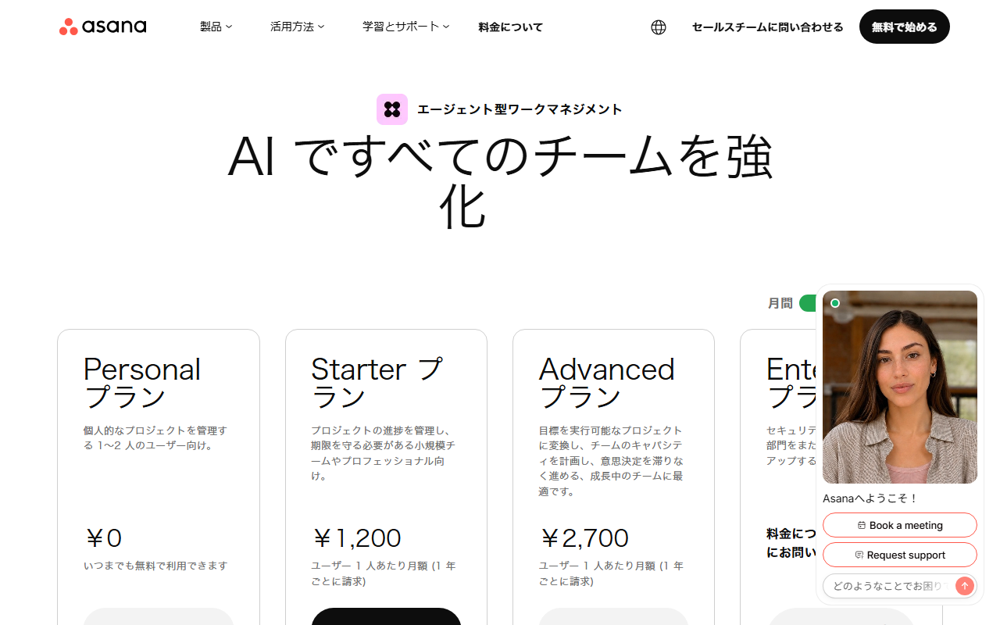
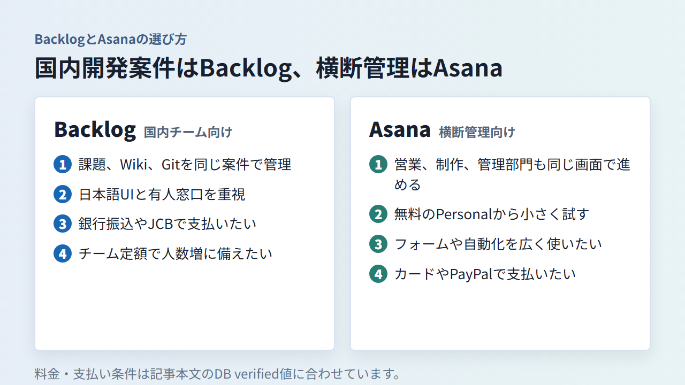

AsanaとBacklogを比較｜料金・機能・日本語対応で自社に合うのはどっち？
AsanaとBacklogは、担当者や期限を決めて仕事を進めるプロジェクト管理ツールです。ただし、料金の単位と得意な仕事の進め方は異なります。
この記事では、無料枠、有料料金、機能、日本語対応、支払い、移行時の注意点を比べます。
AsanaとBacklogの違い（料金・機能・日本語対応）
課題・ドキュメント・Gitと日本語の有人窓口を重視するならBacklog、2人で複数の案件を無料で管理するならAsanaが有力です。料金だけで選ぶと、契約時期と人数によって結論が変わります。
- 料金単位：Backlogはチーム、Asanaはユーザー
- 無料枠：Backlogは1案件、Asanaは2人まで
- 機能：Backlogは課題・ドキュメント・Git
- 機能：Asanaは複数表示・自動化
- 日本語：両方UI対応、有人窓口に差
- 支払い：Backlogは銀行振込にも対応
迷ったら、日本語の有人窓口があり、国内向けの支払い方法も明確なBacklogから検討しましょう。ただし、2人での無料利用や2027年以降の5〜10人の料金を重視するならAsanaも有力です。
Backlogの料金プラン、無料枠、2027年からの変更内容を確認できます。
料金と無料で使える範囲を比較
2人で複数プロジェクトを持つならAsana、1プロジェクトを5〜10人で共有するならBacklog Freeが候補です。有料版は契約時期ごとに、同じ人数で使ったときの総額を比べます。
無料プランは人数だけでなく機能制限を見る
Backlog Freeは現行で10ユーザー、1プロジェクト、総容量100MB、ドキュメント5件です。2027年1月1日に新Freeへ移行すると、ユーザー上限は5人になります。既存の6〜10人は継続できますが、新しいユーザーは追加できません。
Asana Personalは2人まで無料です。タスク、プロジェクト、コメント、ストレージに上限はなく、1ファイルは100MBまで。リスト、ボード、カレンダー表示も使えます。
ただし、タイムラインやガント、ダッシュボード、自動化、フォームはStarterからです。無料で利用できる人数だけでなく、日程の依存関係や申請受付まで管理するかも先に決めておくと、導入後の行き詰まりを避けられます。
有料プランは同じ人数の月額総額で比べる
2026年12月31日まで新規契約できるBacklog Starterは、月払いで月額2,700円です。年払いの月換算は2,565円で、30ユーザー、5プロジェクトまで利用できます。
Asana Starterは1ユーザーあたり、年払いで月額1,200円、月払いで1,475円です。同じ人数で計算すると、月額総額は次のようになります。
- 1人：Backlogは2,700円。AsanaはPersonalなら0円。Starterは最小2席で、2,400円または2,950円
- 5人：Backlogは2,700円。Asana Starterは6,000円または7,375円
- 10人：Backlogは2,700円。Asana Starterは12,000円または14,750円
- 30人：Backlogは2,700円。Asana Starterは36,000円または44,250円
各行の前の金額は年払いの月換算、後ろは月払いです。ただし、Backlog Starterではガントチャートを使えません。ガントが必要なら、月払い16,000円、年払い月換算15,200円のStandardと比べる必要があります。
2027年1月1日から、Backlogは新料金へ移ります。15ユーザーまでのEconomyは月額21,000円、年払い月換算19,950円。30人ならユーザー数無制限のBusinessが必要で、月額36,300円、年払い月換算34,485円です。既存契約は、同日以降の最初の更新日から切り替わります。
2027年以降の年払い月換算を、同じ人数で比べると次のとおりです。
- 5人：Backlog Economyは19,950円、Asana Starterは6,000円
- 10人：Backlog Economyは19,950円、Asana Starterは12,000円
- 30人：Backlog Businessは34,485円、Asana Starterは36,000円
上記の総額は税別です。Asanaの有料プランは最小2席で、6〜30席は5席単位で購入します。組織では社外ゲストは課金席に含まれません。一方、ワークスペースでは参加者全員が課金対象です。
現行料金と2027年以降の新料金を分けて見られます。更新時期も合わせて確認できます。
Personal、Starter、Advancedの月払いと年払いを確認できます。
タスク管理とプロジェクト管理の機能を比較
課題、ドキュメント、Gitを一か所に集めたい開発寄りのチームにはBacklogが合います。営業やマーケティング、制作をまたぐ仕事を複数の表示とルールで整えたいならAsanaが候補です。
Backlogは課題・Wiki・Gitを一か所にまとめられる

見出しのWikiは、2026年7月13日以前から使う既存スペースに限られます。2026年7月14日以降の新規スペースではWikiが提供されず、ドキュメントを使います。
課題ごとに担当者と期限を置き、親子課題で作業を分けられるのがBacklogです。仕様や議事録はドキュメントへ置き、ソースコードはGitまたはSubversionで管理できます。課題から関連資料まで、同じ場所でたどれます。
Webサイト制作なら、要件をドキュメントに残し、デザイン修正や実装を課題に分けます。コード変更をGitで課題にひも付ければ、ディレクターや制作担当者もコメントから経緯を追えます。
ガントチャートは現行Standard以上です。FreeやStarterを選ぶ場合は、ボードと期限だけで管理できるか、日程全体をガントで見る必要があるかを確認しましょう。
課題管理、ドキュメント、Gitなど、プラン選びの前提になる機能を見られます。
Asanaは表示方法と仕事の自動化が豊富

Asanaは同じタスクをリスト、ボード、カレンダーで表示できます。Starterではタイムラインとガントも加わるため、担当者別の作業と全体日程を切り替えて把握できます。
営業から制作へ依頼を渡す場面では、フォームで依頼を受け、ルールで担当者や期限を設定する流れを作れます。定例報告はダッシュボードにまとめられるので、部門ごとに別の管理表を作る手間を減らせます。
ポートフォリオ、ゴール、リソース管理はAdvancedの機能です。複数案件を横断して人員や進捗を見るなら、Starterとの料金差まで含めて判断してください。
表示方法、自動化、フォームなど、Starter以上で使える機能をプラン別に見られます。
日本語・サポート・日本からの支払いを比較
両製品とも日本語UIと日本語の公式情報があります。Backlogは日本語の有人窓口を明記しています。Asanaは日本語チャットボットを使えますが、有人ケースの返信言語は確認できません。
- Backlogの日本語対応：UI、公式情報、有人窓口が日本語
- Backlogの通貨：円建て
- Backlogの支払い：銀行振込、クレジットカード
- Backlogの対応カード：Visa、Mastercard、American Express、JCB、Discover、Diners Club
- Backlogの書類：管理画面から請求書と領収書を取得可能
- Asanaの日本語対応：UI、公式情報、チャットボットが日本語
- Asanaの通貨：日本向けは円建て
- Asanaの支払い：クレジットカード、PayPal
- Asanaの書類：Billingタブから請求書を取得可能
現行プランのBacklogでは、銀行振込は3か月、6か月、12か月の一括払いです。カードは1か月または12か月の一括払いです。2027年1月1日以降は、銀行振込が年払いのみ、カードが月払いまたは年払いになります。新規契約の見積書は、料金ページのシミュレーションからPDFで保存できます。
Asanaの有人ケースは、返信言語を公式情報で確認できません。JCBを含むカードブランド別の対応状況も、公式ヘルプに記載がありません。請求先住所が日本国内の場合、事業上の購入金額には日本の消費税（JCT）が課税されます。個別の税務処理は税理士に確認してください。
BacklogとAsanaはどんなチームに向いている？
開発案件と国内サポートを優先するならBacklog、非開発部門を含む柔軟な進行管理を優先するならAsanaが候補です。人数だけで決めると、必要な機能と料金が合わない場合があります。

Backlogが向いているチーム
次の条件が多いチームには、Backlogが向いています。
- 課題とドキュメント、Gitを一つの案件で結び付けたい
- 5〜10人で同じプロジェクトを共有したい
- 日本語の有人サポートを利用したい
- 銀行振込やJCBで支払いたい
- ユーザー数が増えてもチーム定額で管理したい
現行Starterは30人までですが、ガントチャートは対象外です。日程管理まで必要ならStandard、2027年以降に更新するなら新料金も予算に含めてください。
Asanaが向いているチーム
仕事の種類に応じて画面と流れを変えたいチームには、Asanaが向いています。
- 1〜2人で複数プロジェクトを無料管理したい
- リスト、ボード、カレンダーを切り替えたい
- フォームから依頼を受け付けたい
- ルールで担当者の設定や作業の受け渡しを自動化したい
- 複数部門の案件を横断して管理したい
タイムラインや自動化はStarter、ポートフォリオやリソース管理はAdvancedです。社内利用者は任意に無料ゲストへ振り分けられません。30人では5席単位の購入条件を含め、利用する社内メンバー数で総額を計算します。
BacklogとAsanaを乗り換える前に確認すること
CSVでタスクを移せても、親子関係、依存関係、コメント、添付、カスタム項目、ユーザーの対応付けが同じ形で移るとは限りません。少数のタスクで試し、結果を見てから全体を移します。
AsanaからBacklogへ移す場合
AsanaからプロジェクトをCSVで書き出し、Backlogの一括登録用テンプレートに列を合わせます。最初に、移す項目を件名、説明、担当者、期限、カテゴリーなどに分けてください。
依存関係、添付ファイル、コメント、既存ユーザーの対応付けは、CSVとは別の作業が必要になる可能性があります。テスト用プロジェクトへ少数の課題を登録し、担当者や日付が意図どおりに入るかを確かめます。
BacklogからAsanaへ移す場合
Backlogの課題検索結果をCSVで出力し、AsanaのCSVインポート用に列を対応させます。AsanaのCSVインポートは既存タスクの更新ではなく、新しいタスクの追加です。重複を避けるため、読み込み先は空のテストプロジェクトにします。
Backlogの親子課題やコメント、添付ファイルが、そのままAsanaの階層や履歴になるとは限りません。業務で欠かせない情報は、CSVの列だけでなく元の画面と照合します。
移行後に確認する項目
移行後は、次の順で検収すると抜けを見つけやすくなります。
- タスクとサブタスクの件数
- 親子関係と依存関係
- 担当者と期限
- コメントと添付ファイル
- カスタム項目と選択肢
- 通知先とアクセス権限
旧環境は検収が終わるまで解約しないでください。BacklogもAsanaも、途中解約による返金はありません。Asanaは次回更新前に解約すれば期間末まで有料機能を使えます。Backlogの有料契約も期間末まで利用できます。
移行テストを始める前に、無料枠と契約期間、解約条件を確認できます。
テスト用プロジェクトを作る前に、無料のPersonalと有料プランの差を見られます。
AsanaとBacklogのよくある質問
無料利用、個人利用、日本語での問い合わせ、併用、解約後の扱いについて、契約前に残りやすい疑問へ答えます。
無料で使い続けやすいのはどちら？
2人で複数プロジェクトを持つなら、期限のないAsana Personalが向いています。5〜10人で1プロジェクトを共有するなら現行のBacklog Freeが候補です。ただし、Backlogは2027年1月1日に無料枠が5人へ変わります。
個人や2人チームでも使える？
どちらも使えます。個人または2人なら、複数プロジェクトを作れるAsana Personalが料金面で有利です。Backlog Freeは1プロジェクトに限られますが、課題とドキュメントをまとめたい場合に選択肢となります。
日本語で問い合わせできる？
Backlogは日本語の有人窓口を明記しています。Asanaは日本語ヘルプと日本語チャットボットを利用可能です。ただし、有人ケースの返信言語は公式情報で確認できません。
BacklogとAsanaを併用できる？
併用は可能ですが、同じタスクを両方へ登録すると、担当者や期限を別々に更新することになります。たとえば、開発課題とコードはBacklog、営業や制作を含む全体進行はAsanaと役割を分けます。どちらを正本にするかも決めておきましょう。
解約後もデータを確認できる？
Asanaでは、契約期間が終わると有料機能と関連データへアクセスできなくなります。Backlogの有料契約も期間末まで利用できます。どちらも解約前に必要なデータを出力し、移行先で検収を終えてから手続きするのが安全です。
まとめ：チーム定額ならBacklog、2人の無料利用ならAsana
人数に加えて、Gitとドキュメントをまとめたいか、表示や自動化を広げたいか、日本語の有人窓口が必要かで選ぶ製品は変わります。
Backlogが合うのは、次のようなチームです。
- 5人以上で同じプロジェクトを共有する
- 課題、ドキュメント、Gitを一か所に集める
- 日本語サポートや銀行振込を重視する
Asanaが合う条件はこちらです。
- 1〜2人で複数プロジェクトを無料管理する
- 複数の表示方法やフォームを使う
- 部門をまたぐ仕事をルールで自動化する
契約前には、利用人数、必要な機能、更新時期、支払い方法、移すデータを確認してください。2027年以降の年払い月換算では、5〜10人ならAsana Starter、30人ならBacklog Businessのほうが安くなります。Backlogは機能と日本語窓口、Asanaは人数別の総額も含めて判断します。
Backlogは、現行プランと2027年からの新プランを見比べて契約時期を決められます。
Asanaは、無料枠と有料機能の境目を見て、必要なユーザー数の費用を計算できます。